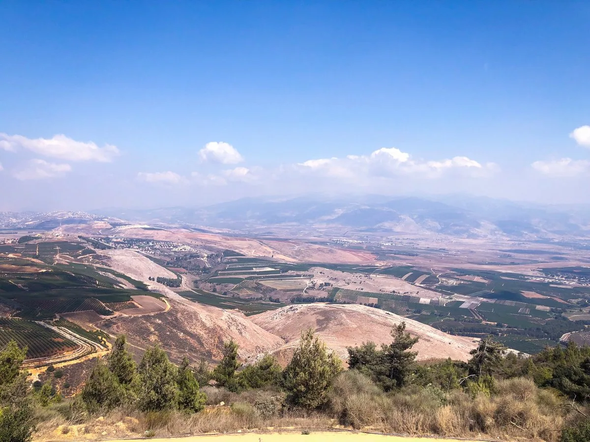

אמר הרב דב יפה זצ"ל: מצוות ישוב א"י היא בכל עת ורגע שנמצאים בה, וחבל הדבר שישנם הנמצאים בארץ הק' רק כ'מתעסק', שמעולם לא חשבו ע"כ שרוצים לקיים מצוה זו. ובודאי שיש הבדל אם אדם מכיר במעלה הזאת ואם לאו.
חובה עלינו איפוא לשמוח בזכות שנפלה בחלקנו לשבת בארץ ישראל, בנוסף לשמחה, עלינו להודות לקב"ה על הזכות שהעניק לנו לחיות וללמוד תורה בארץ הקודש – זכות, שכידוע, נתאוו לה גדולי הדורות. וכשאומרים בברכת המזון: "נודה לך... על שהנחלת לאבותינו ארץ חמדה טובה ורחבה", יש לכוון להודות על זכות זו.
כשנתבונן נראה שההודיה היחידה המופיעה בתורה, היא על הזכות לגור בארץ ישראל. לא מופיעה בתורה הודיה על החיים ועל העולם, לא על העושר ולא על המשפחה, הדבר היחיד שמופיע מצווה מפורשת בתורה להודות עליו זה ארץ ישראל. ולא פעם אחת אלא פעמים: 1. מצוות ברכת המזון - וְאָכַלְתָּ וְשָׂבָעְתָּ וּבֵרַכְתָּ אֶת יְיָ אֱלֹהֶיךָ עַל הָאָרֶץ הַטֹּבָה אֲשֶׁר נָתַן לָךְ: (דברים ח, י). 2. מצוות הביכורים - וּבָאתָ אֶל הַכֹּהֵן אֲשֶׁר יִהְיֶה בַּיָּמִים הָהֵם וְאָמַרְתָּ אֵלָיו הִגַּדְתִּי הַיּוֹם לַייָ אֱלֹהֶיךָ כִּי בָאתִי אֶל הָאָרֶץ אֲשֶׁר נִשְׁבַּע יְיָ לַאֲבֹתֵינוּ לָתֶת לָנוּ: (דברים כו, ג).
גם חג השבועות נקרא בתורה בשם "יום הביכורים" (במדבר כח, כו ושמות לד, כב). הטעם מבאר רש''י: היות והוא חל בזמן בו התבואה מבשילה ונקצרת, מביאים בו קרבן שתי הלחם שהם מנחת חיטים הראשונה מהתבואה החדשה. זהו קרבן ציבורי להודות לה' על שהנחיל לנו את הארץ. כמו שכתב האברבנאל (שמות פרק לד): "ובחג השבועות היו מביאים שתי הלחם שהוא קציר חטים להודות לה' שנתן להם ארץ חטה ושעורה". נמצא שחג השבועות - חג הביכורים, הוא חג של הודיה שמחה ואהבה על הארץ הטובה[1].
[1]. ומה ששמחים בו גם על מתן תורה, אין זה סותר שכן אלו שני השלבים הסופיים של תהליך הגאולה קבלת התורה והכניסה לארץ ישראל.

הודיה ללא רגשת הלב אינה הודיה!
מספר בנו של הגרש"ז אויערבך זצ"ל: לעיתים הייתי רוצה להכניס אליו אנשים בשעה שבירך, כדי שיראו איך צריך לברך ברכת המזון! הוא היה אומר באופן מוחשי כל כך "נודה לך ה' אלוקינו, על שהנחלת לאבותינו ארץ חמדה טובה ורחבה" עד שהיה נדמה לי, שזה נוסח שלא שמעתי מעולם...!
גם כשמיהר מאוד בסעודתו, היתה ברכת המזון כדרכה: במתינות באורך רוח, כמונה מרגליות. פעם הרגישו שבאמצע ברכת נודה לך לפני שהגיע ל 'ועל הכל' חזר ל'נודה לך'. משסיים הסביר לשומעים התמהים: כשברכתי את ה'נודה לך' הראשון האמירה היתה חסרת כוונה. ומכיון שנודה לך ענינו הודאה על ארץ ישראל וכ"ו, הרי שבלי כוונת הלב כלל לא אמרתי נודה לך.
סיפר בנו: פעמים רבות במשך השנה, כשלא היה איש בבית זולתם, שמע את הגרש"ז כופל בברכת המזון את התיבות "והוא יוליכנו קוממיות לארצנו", כמה וכמה פעמים בהתעוררות רבה ובערגת הנפש (הליכות שלמה מועדים ב, פרק יד הערה 11).